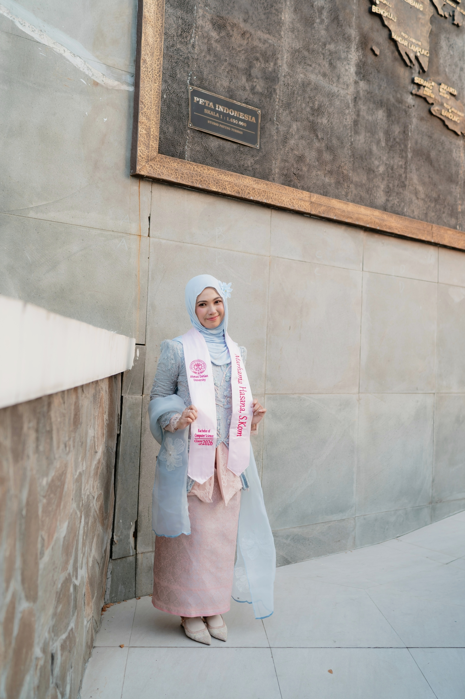
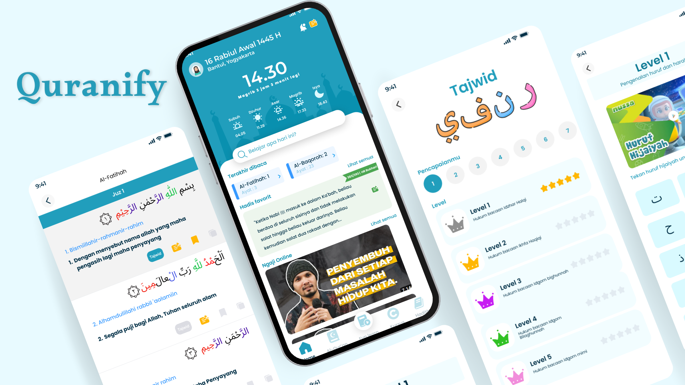
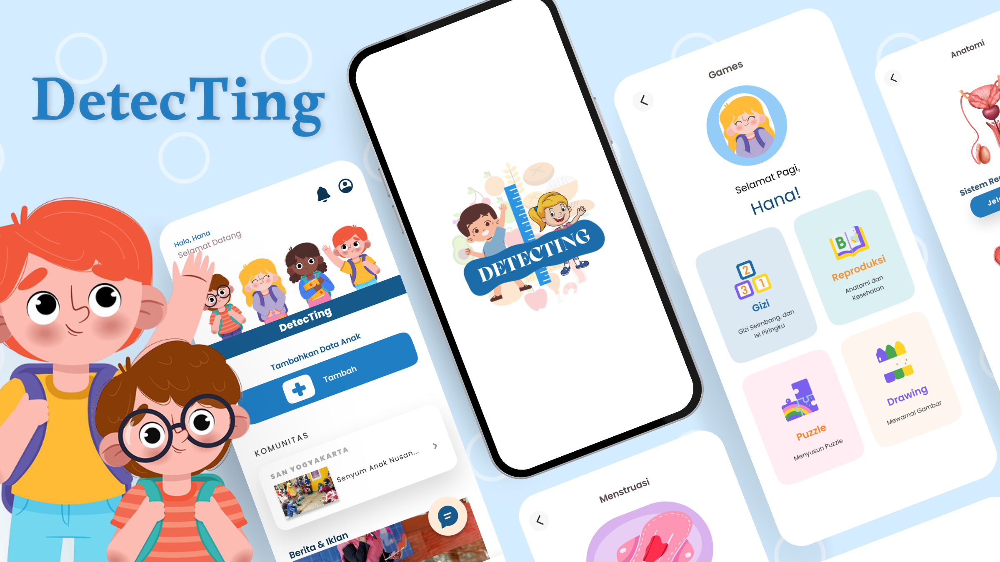
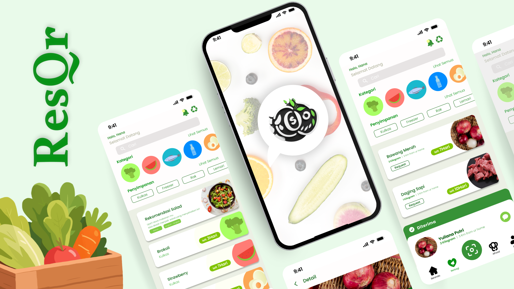

Business & System Analysis
Understanding needs, mapping workflows, and documenting system requirements.
Business Analyst | UI/UX Designer | Business Process Analysis & User-Centered Design
I enjoy understanding problems, analyzing opportunities for improvement, and turning ideas into meaningful digital solutions through business analysis and user-centered design.

A little introduction
A mix of analytical thinking, structured problem-solving, and a soft spot for thoughtful design.
Hello there! ☁
I'm Marhama Hasana, an Information Systems graduate from Universitas Ahmad Dahlan with an interest in Business Analysis and UI/UX Design.
I enjoy understanding business and user needs, analyzing processes, and turning insights into structured solutions and intuitive digital experiences. I value thoughtful research, clear communication, and user-centered problem-solving to create meaningful solutions.
Understanding needs, mapping workflows, and documenting system requirements.
Creating intuitive interfaces through user-centered thinking and prototyping.
Looking at existing processes and finding opportunities to make them clearer and more effective.
A selection of my work
A few projects that reflect my interests in designing digital experiences and analyzing business needs.

UI/UX DESIGNUI/UX design for Quranify, an Islamic learning application designed for both adults and children. The platform combines digital Qur'an reading, online Islamic study sessions, Hadith learning, and interactive educational games, with age-appropriate experiences tailored to each user group.

UI/UX DESIGNUI/UX design for a child-focused educational application that promotes stunting prevention through interactive health education, age-appropriate reproductive health awareness, and engaging educational games. The platform is designed to help children understand healthy habits and body awareness through an accessible and child-friendly digital experience.

UI/UX DESIGNUI/UX design for ResQr, a smart food management application developed as a course final project. It aims to reduce food waste through inventory tracking, expiration monitoring, food sharing, in-app chat, and AI-powered recipe recommendations.
 SYSTEM ANALYSIS
SYSTEM ANALYSIS
Website platform planning to support disaster information delivery and river-condition monitoring through website information integrated with IoT sensor data.
 INDEPENDENT CASE STUDY
INDEPENDENT CASE STUDY
Independent system analysis case study for a sales automation platform, covering visit validation, geotagging, order management, offline sync, and anomaly handling.
 INDEPENDENT CASE STUDY
INDEPENDENT CASE STUDY
Independent system analysis case study for an HR management system, covering automated attendance, break tracking, leave requests, and approval workflows.
Experience & growth
Experiences and milestones that have shaped the way I learn, collaborate, and work.
Apr 2025 – Jun 2026
LPSI, Universitas Ahmad Dahlan
Managed and verified institutional data covering 1,000+ students, 50+ lecturers, and 50+ administrative staff. Prepared reports, processed operational data, and handled AIK/TBQ certificate administration.
Feb 2026 – Present
Freelance
Created 50+ digital design materials, coordinated client revisions, and managed multiple projects and deadlines.
2025
U-DARE 3.0, Disaster Education Media Competition, Universitas Syiah Kuala.
2024
Mahasiswa Berprestasi FAST, Universitas Ahmad Dahlan.
2025
3rd Ahmad Dahlan International Seminar, Future Education.
2023
ITCC, Udayana University.
2023
UB MTQMN #3 National, Universitas Brawijaya.
2023
Quranic Application Design Competition, Universitas Negeri Yogyakarta.
Tools & skills
Have a project in mind?
I'm always happy to connect, exchange ideas, or explore opportunities to collaborate.
Say Hello